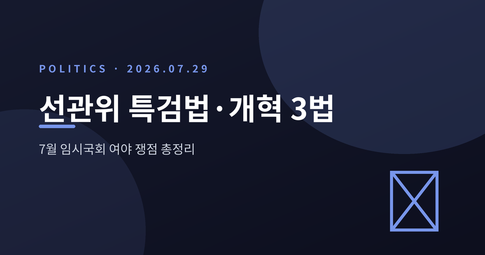
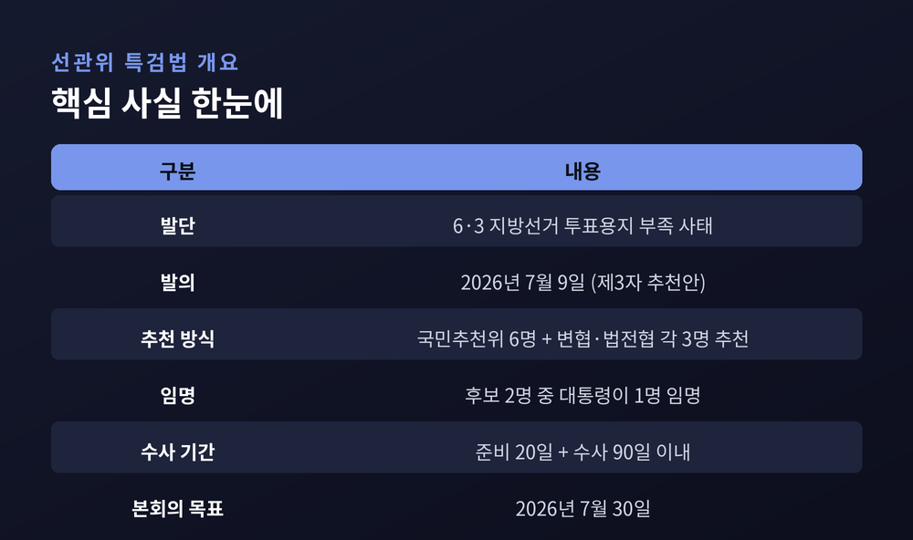
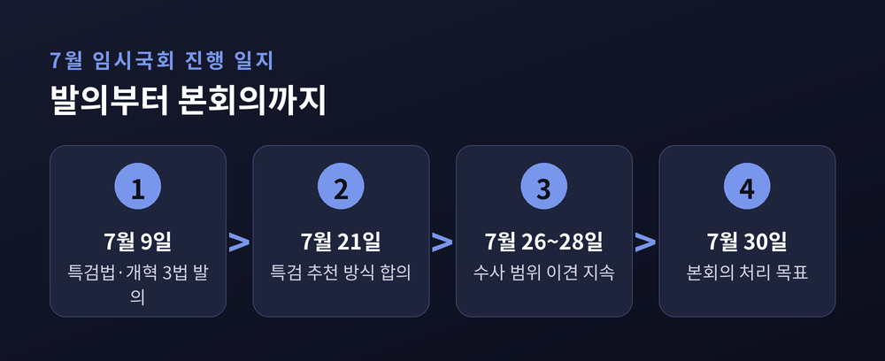
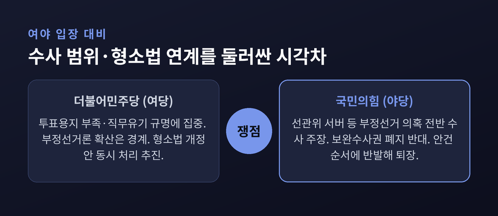
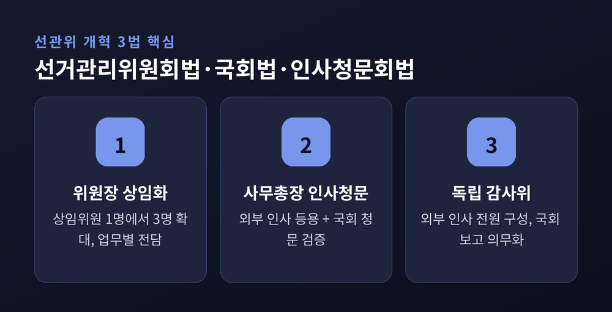
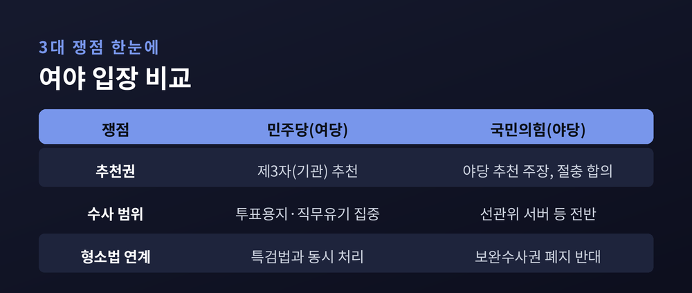

선관위 특검법·개혁 3법 총정리 — 7월 임시국회 여야 쟁점과 30일 본회의 전망

이번 글에서는 7월 임시국회의 최대 현안인 '선관위 특검법'과 '선관위 개혁 3법'을 정리해 보겠습니다.
먼저 결론부터 말씀드립니다. 특검 후보 추천 방식은 여야가 합의했지만, 수사 범위와 형사소송법 연계를 두고는 아직 이견이 남아 있습니다.
7월 30일 본회의가 분수령입니다. 정치적으로 민감한 사안인 만큼, 추진하는 더불어민주당(여당)과 우려를 표하는 국민의힘(야당)의 입장을 함께 정리하겠습니다.
지금 무슨 일이 벌어지고 있나
선관위 특검법은 6·3 지방선거의 투표용지 부족 사태에서 출발했습니다.
당시 일부 투표소에서 용지가 모자라는 일이 벌어졌고, 중앙선거관리위원회의 부실 관리가 도마에 올랐습니다.
여당인 민주당은 7월 9일 두 갈래로 대응에 나섰습니다.
하나는 책임을 규명할 '선관위 특검법', 다른 하나는 조직 자체를 손보는 '선관위 개혁 3법'입니다.
특검이 개인의 책임을 겨눈다면, 개혁 3법은 되풀이되지 않도록 시스템을 바꾸겠다는 목표를 담았습니다.
두 법안을 한 흐름으로 함께 밀어붙인 셈입니다.
한 가지 짚고 넘어갈 점이 있습니다.
이번 선관위 특검은, 앞서 논의됐던 종합특검 연장법과는 별개의 사안입니다.
대상도 선관위이고, 발단도 지방선거 관리 부실입니다.
이름이 비슷해 헷갈리기 쉽지만, 두 사안을 분리해서 보시는 편이 이해에 도움이 됩니다.
7월 21일에는 여야가 특검 후보 추천 방식에 합의했습니다.
약 50여 일간 이어진 국회 공전이 풀릴 계기라는 평가가 나왔습니다.
다만 7월 29일 현재, 수사 범위와 안건 처리 순서를 둘러싼 신경전은 계속되고 있습니다.

왜 중요한가
선거를 관리하는 기관이 수사 대상이 됐다는 점이 핵심입니다.
선관위는 헌법상 독립기구입니다. 그 독립성과 신뢰가 흔들리면 선거 결과에 대한 불복 정서로 번질 수 있습니다.
그래서 이 사안은 단순한 정쟁이 아닙니다.
어떻게 수사하고 어떻게 개혁하느냐에 따라, 다음 선거를 대하는 국민의 신뢰가 달라집니다.
예전엔 선관위 문제를 내부 감찰로 덮는 일이 많았습니다.
지금은 특검과 국회 인사청문이라는 외부의 눈으로 끌어내려는 흐름입니다.
그 변화의 크기가 이번 논의의 무게이기도 합니다.
어떻게 흘러왔나 — 7월 임시국회 일지
날짜별로 짚어 보겠습니다.
- 7월 9일: 민주당, '제3자 추천' 선관위 특검법과 개혁 3법 발의.
- 7월 21일: 여야, 특검 후보 추천 방식 합의(국민추천위 구성).
- 7월 26~28일: 수사 대상·범위를 두고 이견 지속.
- 7월 29일: 법사위에서 안건 순서 충돌, 국민의힘 퇴장.
- 7월 30일(예정): 본회의 처리 목표.
특검은 준비기간 20일을 거쳐 90일 이내에 수사하도록 설계돼 있습니다.
추천 방식 합의의 뼈대는 이렇습니다.
국회 안에 국민추천위원회를 여야 3명씩 총 6명으로 구성하고, 대한변협과 법학전문대학원협의회가 각각 3명씩 후보를 냅니다.
그중 2명을 여야 합의로 골라 대통령에게 올리면, 대통령이 1명을 임명합니다.

쟁점과 이해관계 — 여야는 어디서 갈리나
추천 방식은 합의했지만, 나머지 쟁점에서 두 당의 시선은 다릅니다.
첫째, 특검 추천권을 두고 처음부터 부딪혔습니다.
국민의힘은 관례대로 야당이 특검을 추천해야 공정하다고 봤습니다.
반면 민주당은 다르게 반박했습니다.
"선관위원 중 국민의힘 추천 위원이 2명, 민주당 추천이 1명인 만큼, 선관위원을 추천한 쪽이 특검까지 추천하는 것은 맞지 않는다"는 논리였습니다.
이 대립은 7월 21일 제3의 기관 추천을 절충하며 봉합됐습니다.
둘째, 지금 남은 최대 쟁점은 수사 범위입니다.
민주당은 투표용지 부족 등 선거관리 부실과 직무유기·직권남용에 집중하자는 입장입니다.
'부정선거론'으로 번지는 것은 경계합니다.
국민의힘은 선관위 서버를 포함해 선거 부정 의혹 전반을 폭넓게 봐야 한다고 맞섭니다.
같은 특검을 두고 겨냥하는 지점이 서로 다른 셈입니다.
셋째, 형사소송법 개정안 연계도 변수입니다.
민주당은 30일 본회의에서 검찰 보완수사권 폐지를 담은 형소법 개정안을 특검법과 함께 처리하려 합니다.
국민의힘은 "보완수사권이 폐지되면 범죄 대응에 공백이 생긴다"며 강하게 반대합니다.
안건을 묶는 방식 자체가 또 하나의 뇌관인 것입니다.

선관위 개혁 3법은 무엇을 바꾸나
특검이 '과거의 책임'을 묻는 것이라면, 개혁 3법은 '앞으로의 구조'를 바꾸려는 시도입니다.
선거관리위원회법·국회법·인사청문회법 개정안, 이렇게 세 갈래로 구성됩니다.
핵심은 세 가지입니다.
하나, 위원장을 상임 체계로 바꾸고 상임위원을 1명에서 3명으로 늘립니다.
선거·투표 관리, 조사·단속, 조직 운영을 각각 전담하게 하려는 취지입니다.
둘, 사무총장을 외부 인사로 등용하고 국회 인사청문을 거치게 합니다.
셋, 감사위원 전원을 외부 인사로 채운 독립 감사위원회를 둡니다.
선거가 끝나면 선거관리 전반을 평가하고, 그 보고서를 국회에 의무적으로 내도록 했습니다.
물론 이 개혁안이 완벽하다고 보기는 어렵습니다.
독립기구인 선관위에 국회의 통제를 얼마나 넣는 것이 적절한가, 그 균형을 두고는 이견이 있을 수 있습니다.
개혁의 방향과 그 부작용을 함께 살펴야 하는 이유입니다.

세 가지 쟁점 한눈에 보기
복잡해 보이지만, 결국 세 축으로 정리됩니다.

이 표를 기준으로 30일 본회의를 지켜보시면, 무엇이 합의됐고 무엇이 남았는지 가늠하실 수 있습니다.
앞으로의 전망
가장 큰 변수는 7월 30일 본회의입니다.
여당은 수적 우위를 바탕으로 특검법과 형소법을 함께 통과시키겠다는 방침입니다.
야당은 수사 범위와 형소법 연계에 반발하며 절차 문제를 제기하고 있습니다.
특검법이 통과되더라도 끝이 아닙니다.
수사 범위를 어떻게 확정하느냐에 따라 이후 정국의 온도가 달라질 것입니다.
수사 대상이 좁으면 야당은 '봐주기'라고 비판할 수 있고, 지나치게 넓으면 여당은 '정치 수사'라고 맞설 수 있습니다.
어느 쪽이든 결과에 대한 승복이 뒤따라야 의미가 있습니다.
개혁 3법 역시 상임위 심사라는 관문이 남아 있습니다.
독립기구의 자율성과 국회의 견제, 그 사이의 균형점을 찾는 일은 시간이 걸릴 것입니다.
한쪽의 힘만으로 밀어붙인 개혁은 다음 정권에서 다시 흔들릴 수 있습니다.
그래서 이번 논의가 여야의 최소한의 공감대 위에서 마무리되기를 기대하는 목소리도 적지 않습니다.
정리하면 이렇습니다.
선관위 특검법과 개혁 3법은 '책임 규명'과 '구조 개혁'이라는 두 바퀴로 굴러갑니다.
추천 방식이라는 첫 매듭은 풀렸지만, 수사 범위라는 두 번째 매듭이 남았습니다.
제도를 고치는 일은, 결국 신뢰를 다시 세우는 일입니다.
선거의 공정을 지키는 방식을 두고 여야가 어떤 답을 내놓을지, 30일의 국회를 차분히 지켜볼 만합니다.